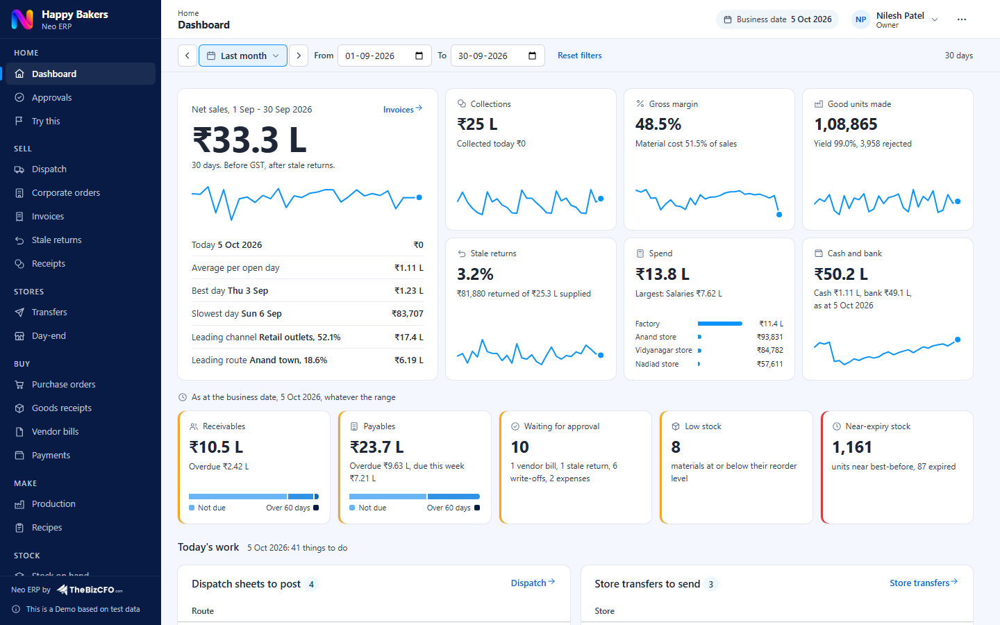

A short guide: what the demo shows, how to explore it, and how it differs from a live system.
Happy Bakers is a bakery we made up to show Neo ERP at work on a business you can picture. It is an all-vegetarian, eggless bakery factory in Anand, Gujarat. It bakes bread, pav, burger buns, toast, khari and puffs, 18 products in all, and supplies 40 retail outlets on four van routes, 10 corporate customers and its own three stores. It has 35 employees and sells about Rs 4 crore a year.
You can do more than look. Post a dispatch sheet, raise a purchase order, record a production run or enter a store's day-end, and the stock, the balances, the costs and the dashboard change at once.

The dashboard: sales, collections, margin, production, stale returns, spend and cash for the dates you choose, and what needs attention today.
Try this, in the menu, lists these and ticks each step as you post it. The Owner can do every step.
The demo runs on its own in your browser, so a few things differ from a live Neo ERP.
| In the demo | In a live system | |
|---|---|---|
| Connections | Switched off. | Connections to Tally, Zoho Books, banks and GST verification are set up as part of iNeo and NeoX. |
| Email alerts | The Notification log lists the emails. None is sent. | Neo ERP emails approval requests, overdue receivables, bills falling due, low stock and stock near expiry. |
| Users | Six people to switch between, with no passwords of their own. | Each person signs in to their own account and sees what their role allows. |
| Attendance, leave and tasks | Left out to keep the demo short. | Part of Neo ERP. |
| Earlier history | The books start on 1 January 2026 with opening balances. | Neo ERP starts with your opening balances at go-live. Bringing in 12 to 18 months of history is part of iNeo. |
| GST | A summary of output and input GST by rate. Nothing is filed. | The same summary on your own documents, to check your return against. |
Digitise daily work in one shared system.
Connect outside systems, bring in history and add basic budgets.
Analyse several years, forecast and plan.
In the demo, a locked card marks each place where iNeo or NeoX adds something. Higher tiers lists them.